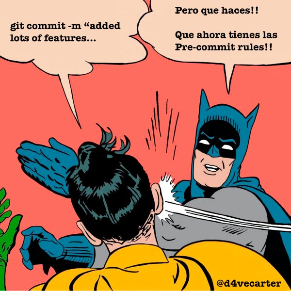

Frontend Pre-commit Rules
To serve & Protect the Quality of your code
por David García / @d4vecarter
¿Para qué sirven?
Mejorar la calidad del código en un equipo.
Normalizar el estilo y las buenas prácticas personales.
¿Qué es lo que sientes al usarlas por primera vez?
¿Cómo evitarlo?
Conociendo las reglas
Usando plugins de linting
¿Qué es el Linting?¿Cual elegir?
No existe una fórmula mágica.
Consensuar reglas entre miembros del equipo.
Airbnb JavaScript Style Guide¿Cómo funcionan?
Precommit Hook.
Otros tipos: Pre-Push Hook [...]
Más información sobre Git Hooks¿Cómo añado las Frontend Pre-commit Rules a mi proyecto?
- Ejemplo práctico:
Inicializa tu proyecto
- Crea una carpeta local
$ mkdir my-project
$ cd my-project
Inicializa Git
$ my-project > git init
$ touch .gitignore
& git remote add origin [...]
Crear archivo .gitignore
Inicializa NPM
$ my-project > npm init
Frontend Pre-commit Rules
by Schibsted Engineers
// Añadimos Frontend Pre-commit Rules:
$ npm i @schibstedspain/frontend-pre-commit-rules --save-dev
Package NPM: Frontend Pre-commit Rules
Github: Frontend Pre-commit Rules
Añadimos dependencias de linters
// Añadimos Frontend Pre-commit Rules:
$ npm i eslint eslint-plugin-react babel-eslint node-sass --save-dev
Pre-commit hook
En el package.json añadimos:
// Pre-commit hook:
"pre-commit": [
"lint"
]
// Scripts de linting:
"lint": "npm run lint:eslint && npm run lint:sass",
"lint:eslint": "eslint --ext=.js --ext=.jsx ./src/",
"lint:sass": "scss-lint src/"
Archivos /src
src/index.js
src/index.scss
Commitear cambios
Ejecutar scripts de linting
// JavaScript y Sass:
$ npm run lint
// Sólo JavaScript:
$ npm run lint:eslint
// Sólo Sass:
$ npm run lint:sass
Sublime Text Linting Plugins
SublimeLinter-contrib-eslint
SublimeLinter-contrib-sass-lint - (Ruby Gem)
Más Información sobre la instalaciónOtras integraciones
Yeoman Generator
Scaffolding de proyectos con Yeoman
YeomanGenerator SUI React
by Schibsted Engineers
$ npm install -g @schibstedspain/generator-sui-react
Generator SUI React